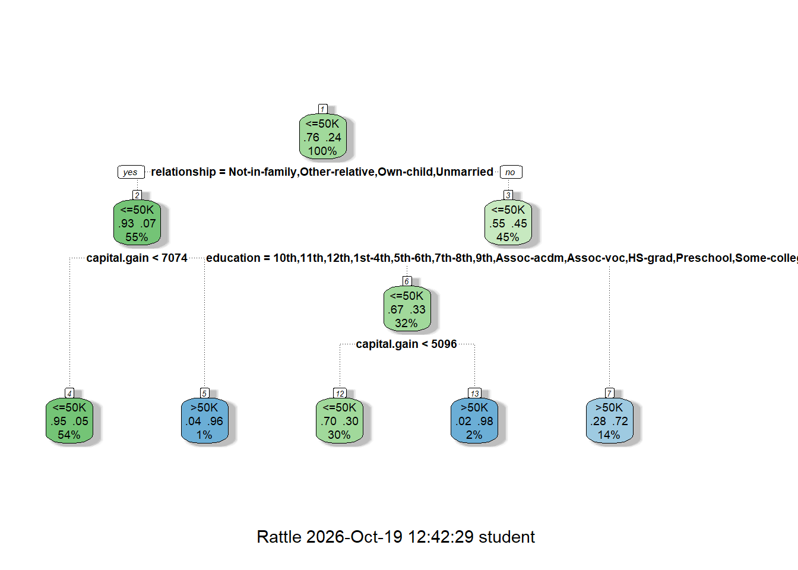
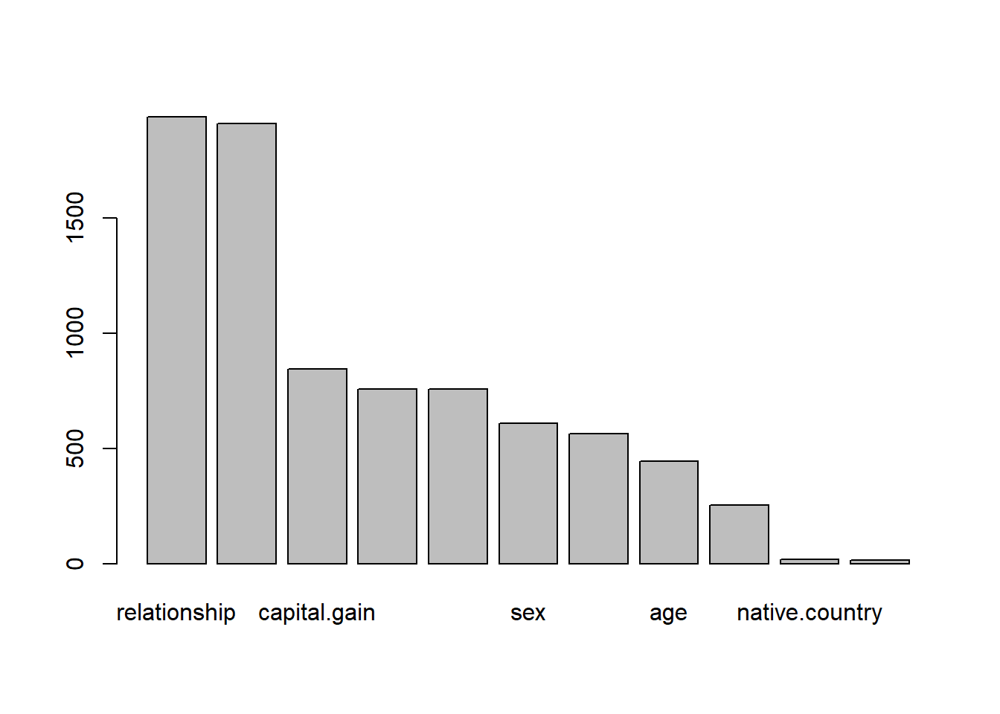
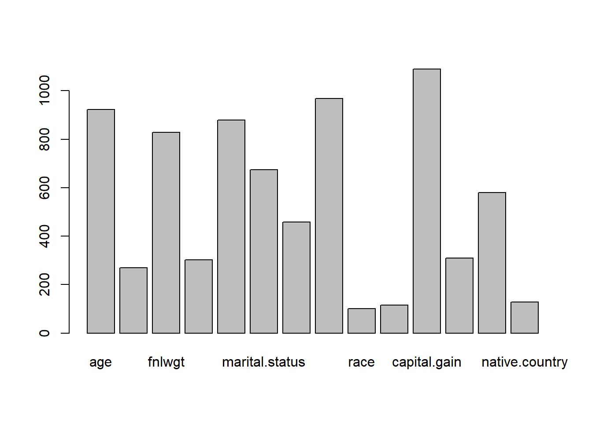

library(tidyverse)
df <- read_csv("C://Users//student//Documents//GitHub//Math421_Assignments//adult_census.csv")
library(caret)
df$income <- as.factor(df$income)
set.seed(2020)
splitIndex <- createDataPartition(df$income, p = 0.80, list = FALSE)
df_train <- df[splitIndex, ]
df_test <- df[-splitIndex, ]assignment 10
How to do it?:
Open the Rmarkdown file of this assignment (link) in Rstudio.
Right under each question, insert a code chunk (you can use the hotkey
Ctrl + Alt + Ito add a code chunk) and code the solution for the question.Knitthe rmarkdown file (hotkey:Ctrl + Alt + K) to export an html.Publish the html file to your Githiub Page.
Submission: Submit the link on Github of the assignment to Canvas
- Use the
Adult Census Incomedataset. We will predict the income (whether or not it is more than 50k or not) of an adult. Import the dataset. Partition the data into 80% training and 20% testing.
- Practice Decision Tree. Do the follows:
- Use
rpartpackage, create a decision tree with maximum depth of 3.
library(rpart)
tree_model <- rpart(income ~ ., data = df_train, method = "class",
control = rpart.control(maxdepth = 3))- Calculate the accuracy of the model on the testing data. Notice that the positive outcome here is not
1but>50Kor<50K.
pred_tree <- predict(tree_model, df_test, type = "class")
positive_class <- levels(df_train$income)[grepl(">50K", levels(df_train$income), fixed = TRUE)][1]
cm_tree <- confusionMatrix(data = pred_tree, reference = df_test$income, positive = positive_class)
cm_tree$overall["Accuracy"] Accuracy
0.8387592 - Plot the tree
library(rattle)
fancyRpartPlot(tree_model)
- Plot the variable importance by the tree
tree_model$variable.importance relationship marital.status capital.gain education education.num
1937.45298 1907.75204 845.26349 757.49163 757.49163
sex occupation age hours.per.week native.country
607.96674 564.69287 442.56040 254.01687 17.40872
capital.loss
14.22420 barplot(tree_model$variable.importance)
- Create 3 more trees and compare the testing accuracy of these trees, which tree give the highest testing accuracy.
# tree 1
tree_model_2 <- rpart(income ~ ., data = df_train, method = "class", control = rpart.control(maxdepth = 2))
# tree 2
tree_model_4 <- rpart(income ~ ., data = df_train, method = "class",
control = rpart.control(maxdepth = 4))
# tree 3
tree_model_5 <- rpart(income ~ ., data = df_train, method = "class",
control = rpart.control(maxdepth = 5))
# accuracy
get_accuracy <- function(model, test_data, positive_class)
{predictions <- predict(model, test_data, type = "class")
cm <- confusionMatrix(data = predictions, reference = test_data$income,
positive = positive_class)
as.numeric(cm$overall["Accuracy"])}
# compare
tree_accuracies <- data.frame(Model = c("Tree Depth 2", "Tree Depth 3",
"Tree Depth 4", "Tree Depth 5"), Accuracy = c( get_accuracy(tree_model_2, df_test, positive_class), get_accuracy(tree_model, df_test, positive_class),
get_accuracy(tree_model_4, df_test, positive_class),
get_accuracy(tree_model_5, df_test, positive_class)))
print(tree_accuracies) Model Accuracy
1 Tree Depth 2 0.8264742
2 Tree Depth 3 0.8387592
3 Tree Depth 4 0.8387592
4 Tree Depth 5 0.8387592# highest
tree_accuracies[which.max(tree_accuracies$Accuracy),] Model Accuracy
2 Tree Depth 3 0.8387592- Practice Random Forest. Do the follows:
- Use
randomForestpackage, create a random forest of 1000 trees.
library(randomForest)
set.seed(2020)
forest_model = randomForest(income ~ ., data=df_train, ntree = 1000)
pred <- predict(forest_model, df_test, type = "class")- Calculate the accuracy of the model on the testing data.
pred_forest <- predict(forest_model, df_test, type = "class")
cm_forest <- confusionMatrix(data = pred_forest, reference = df_test$income, positive = positive_class)
cm_forest$overall["Accuracy"] Accuracy
0.8590295 - Plot the variable importance by the forest
importance(forest_model) MeanDecreaseGini
age 922.8289
workclass 270.1073
fnlwgt 828.1003
education 302.1321
education.num 878.7044
marital.status 673.5081
occupation 457.7893
relationship 968.8240
race 100.3585
sex 114.8894
capital.gain 1089.6438
capital.loss 309.4467
hours.per.week 579.0045
native.country 128.7089barplot(importance(forest_model)[, 1],)
- Create 3 more forests and compare the testing accuracy of these forests, which forest give the highest testing accuracy.
p <- ncol(df_train) - 1
# different mtry variables for different random subset
mtry_1 <- max(1, floor(sqrt(p)))
mtry_2 <- max(1, floor(p / 3))
mtry_3 <- p
# forest 2
set.seed(2021)
forest_model_2 <- randomForest(income ~ ., data = df_train, ntree = 1000, mtry = mtry_1)
# forest 3
set.seed(2022)
forest_model_3 <- randomForest(income ~ ., data = df_train, ntree = 1000, mtry = mtry_2)
# forest 4
set.seed(2023)
forest_model_4 <- randomForest(income ~ ., data = df_train, ntree = 1000, mtry = mtry_3)
# compare
forest_accuracies <- data.frame(Model = c("Forest: Default mtry",
paste("Forest: mtry =", mtry_1), paste("Forest: mtry =", mtry_2),
paste("Forest: mtry =", mtry_3)), Accuracy = c(
get_accuracy(forest_model, df_test, positive_class),
get_accuracy(forest_model_2, df_test, positive_class),
get_accuracy(forest_model_3, df_test, positive_class),
get_accuracy(forest_model_4, df_test, positive_class)))
print(forest_accuracies) Model Accuracy
1 Forest: Default mtry 0.8591830
2 Forest: mtry = 3 0.8601044
3 Forest: mtry = 4 0.8584152
4 Forest: mtry = 14 0.8524263# highest accuracy
forest_accuracies[which.max(forest_accuracies$Accuracy),] Model Accuracy
2 Forest: mtry = 3 0.8601044- What is the best model (in term of testing accuracy) among all models (including trees and forests) you have trained?
all_accuracies <- data.frame(Model = c(tree_accuracies$Model, forest_accuracies$Model), Accuracy = c(tree_accuracies$Accuracy,
forest_accuracies$Accuracy))
all_accuracies <- all_accuracies[order(all_accuracies$Accuracy, decreasing = TRUE),]
print(all_accuracies) Model Accuracy
6 Forest: mtry = 3 0.8601044
5 Forest: Default mtry 0.8591830
7 Forest: mtry = 4 0.8584152
8 Forest: mtry = 14 0.8524263
2 Tree Depth 3 0.8387592
3 Tree Depth 4 0.8387592
4 Tree Depth 5 0.8387592
1 Tree Depth 2 0.8264742# best model
best_model <- all_accuracies[1, ]
print(best_model) Model Accuracy
6 Forest: mtry = 3 0.8601044